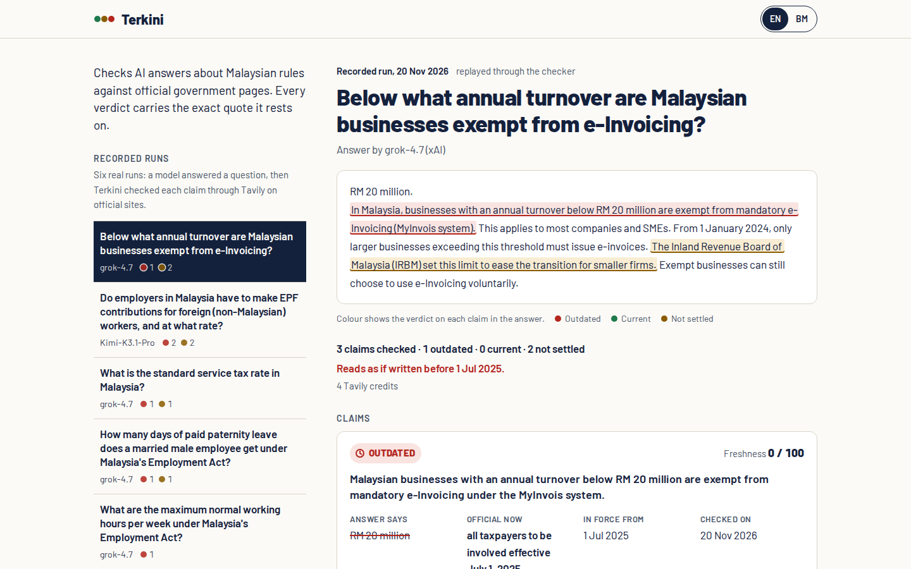

Is this AI answer still true where you live?
A stale-answer detector for local rules. It checks each claim in an AI answer about a Malaysian rule against official government pages, with the exact quote and the date the rule took effect.
Eval, 21 Nov 2026: 28 of 68 answers from 3 models were stale. Terkini flagged 13 of them, and 13 of its 20 flags were right, each with an official quote.
Grok 4.7, asked for the standard service tax rate
"The standard service tax rate in Malaysia is 6%."
customs.gov.my, read through Tavily on 21 Nov 2026
"…the service tax rate for most prescribed taxable services … will increase from 6% to 8%, effective from 01 March 2024."
Tavily searches only the domains in the country pack. A blog or a news site can add context. It cannot decide a verdict.
The judge model must quote the official page. Code checks the quote word for word, and the date must sit inside it. Otherwise the claim is unverifiable.
The report says when the rule took effect, and the date the answer reads as if it were written before.
23 questions about Malaysian rules. The key was read from official pages before any model answered. Every answer was checked on 21 Nov 2026.
Six recorded runs, English and Bahasa Melayu, no key. Open a claim to see the official quote, the date and the source.

No key needed:
uv run terkini check --pack my --case my-03--grok-4-7
Terkini · pack my · checked on 2026-11-21 (eval run, 2026-11-21) OLD outdated score 0 The standard service tax rate in Malaysia is 6%. official now: 8% in force from: 2024-03-01 source: https://mystods.customs.gov.my/storage/app/media/pdf/guide/guide-on-… quote: "… the service tax rate for most prescribed taxable services under Service Tax Act 2018 (“STA 2018”) … will increase from 6% to 8%, effective from 01 March 2024." … 2 claims checked, 1 outdated, 2 skipped, 1 Tavily credits This answer reads as if written before 2024-03-01
The answer key labels this Grok 4.7 answer stale. Misses and false alarms are listed in docs/EVAL.md; --case my-12-kimi-k3-1-pro replays one false alarm.
Stale answers flagged, of 28 · eval of 21 Nov 2026
Dark bars: Terkini, every flag backed by an exact official quote. Dashed bars: baselines on the same 68 answers; the model alone gives no source.
Command line, HTTP API, the replay page, demo/run.sh with Docker only, the eval over 68 answers.
Recall 46%: most misses end unverifiable. No India pack. The page replays runs; live checks run on your machine.
Not legal advice. · github.com/aimanmalib/terkini · aimanmalib.github.io/terkini